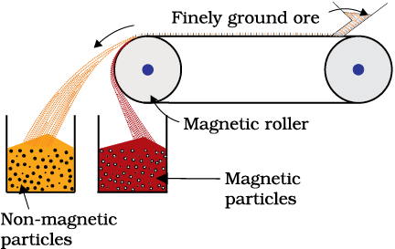
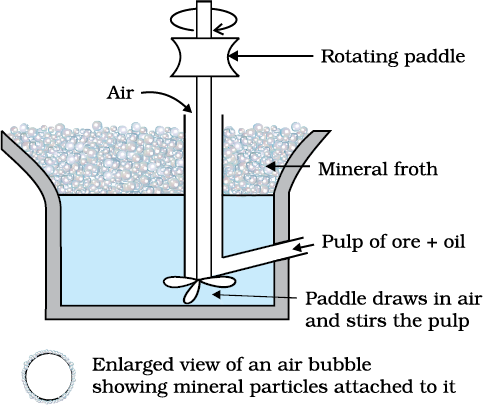
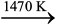
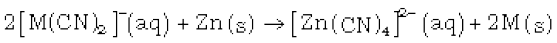

6.2. Concentration of Ores
Removal of the unwanted materials (e.g., sand, clays, etc.) from the ore is known as concentration, dressing or benefaction. It involves several steps and selection of these steps depends upon the differences in physical properties of the compound of the metal present and that of the gangue. The type of the metal, the available facilities and the environmental factors are also taken into consideration. Some of the important procedures are described below.
6.2.1 Hydraulic Washing
This is based on the differences in gravities of the ore and the gangue particles. It is therefore a type of gravity separation. In one such process, an upward stream of running water is used to wash the powdered ore. The lighter gangue particles are washed away and the heavier ores are left behind.
6.2.2 Magnetic Separation
This is based on differences in magnetic properties of the ore components. If either the ore or the gangue (one of these two) is capable of being attracted by a magnetic field, then such separations are carried out (e.g., in case of iron ores). The ground ore is carried on a conveyer belt which passes over a magnetic roller (Fig.6.1).

Fig. 6.1: Magnetic separation (schematic)
6.2.3 Froth Floatation Method
This method has been in use for removing gangue from sulphide ores. In this process, a suspension of the powdered ore is made with water. To it, collectors and froth stabilisers are added. Collectors (e. g., pine oils, fatty acids, xanthates, etc.) enhance non-wettability of the mineral particles and froth stabilisers (e. g., cresols, aniline) stabilise the froth.
The mineral particles become wet by oils while the gangue particles by water. A rotating paddle agitates the mixture and draws air in it. As a result, froth is formed which carries the mineral particles. The froth is light and is skimmed off. It is then dried for recovery of the ore particles.
Sometimes, it is possible to separate two sulphide ores by adjusting proportion of oil to water or by using ‘depressants’. For example, in case of an ore containing ZnS and PbS, the depressant used is NaCN. It selectively prevents ZnS from coming to the froth but allows PbS to come with the froth.

Fig 6.2: Forth floatation process (schemattic)
The Innovative Washerwoman
One can do wonders if he or she has a scientific temperament and is attentive to observations. A washerwoman had an innovative mind too. While washing a miner's overalls, she noticed that sand and similar dirt fell to the bottom of the washtub. What was peculiar, the copper bearing compounds that had come to the clothes from the mines, were caught in the soapsuds and so they came to the top. One of her clients was a chemist, Mrs. Carrie Everson. The washerwoman told her experience to Mrs. Everson. The latter thought that the idea could be used for separating copper compounds from rocky and earth materials on large scale. This way an invention was born. At that time only those ores were used for extraction of copper, which contained large amounts of the metal. Invention of the Froth Floatation Method made copper mining profitable even from the low-grade ores. World production of copper soared and the metal became cheaper.
6.2.4 Leaching
Leaching is often used if the ore is soluble in some suitable solvent. The following examples illustrate the procedure:
(a) Leaching of alumina from bauxite
The principal ore of aluminium, bauxite, usually contains SiO2, iron oxides and titanium oxide (TiO2) as impurities. Concentration is carried out by digesting the powdered ore with a concentrated solution of NaOH at 473 – 523 K and 35 – 36 bar pressure. This way, Al2O3 is leached out as sodium aluminate (and SiO2 too as sodium silicate) leaving the impurities behind:
Al2O3(s) + 2NaOH(aq) + 3H2O(l) → 2Na[Al(OH) 4](aq) (6.1)
The aluminate in solution is neutralised by passing CO2 gas and hydrated Al2O3 is precipitated. At this stage, the solution is seeded with freshly prepared samples of hydrated Al2O3 which induces the precipitation:
2Na[Al(OH)4](aq) + CO2(g) → Al2O3.xH2O(s) + 2NaHCO3 (aq) (6.2)
The sodium silicate remains in the solution and hydrated alumina is filtered, dried and heated to give back pure Al2O3:
Al2O3.xH2O(s)  Al2O3(s) + xH2O(g) (6.3)
(b) Other examples
In the metallurgy of silver and that of gold, the respective metal is leached with a dilute solution of NaCN or KCN in the presence of air (for O2) from which the metal is obtained later by replacement:
4M(s) + 8CN–(aq)+ 2H2O(aq) + O2(g) → 4[M(CN)2]– (aq) + 4OH–(aq) (M= Ag or Au) (6.4)
 (6.5)